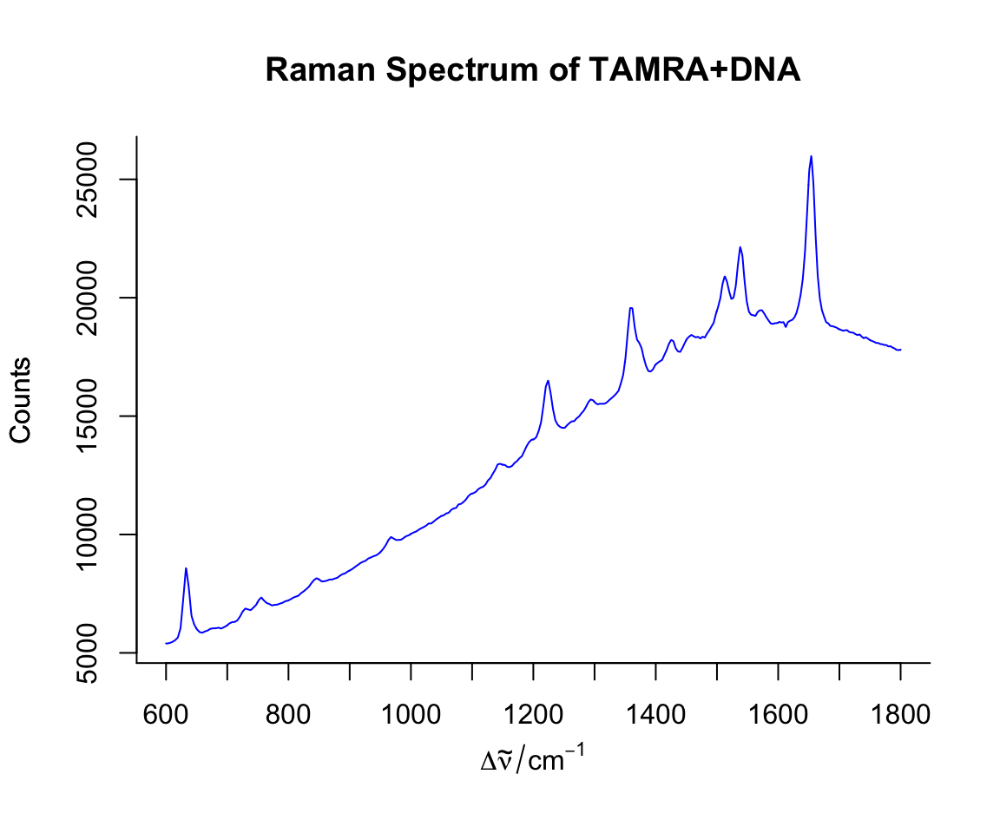

Introducing serrsBayes
Matt Moores
2018-02-19
The R package serrsBayes uses a sequential Monte Carlo (SMC) algorithm (Del Moral, Doucet, and Jasra 2006) to separate an observed spectrum into 3 components: the peaks \(s_i(\tilde\nu)\); baseline \(\xi_i(\tilde\nu)\); and additive white noise \(\epsilon_{i,j} \sim \mathcal{N}(0, \sigma^2_\epsilon)\): \[ \mathbf{y}_i = \xi_i(\tilde\nu) + s_i(\tilde\nu) + \boldsymbol\epsilon_i \] This is a type of functional data analysis (Ramsay, Hooker, and Graves 2009), since the discretised spectrum \(\mathbf{y}_i\) is represented using latent (unobserved), continuous functions. The background fluorescence \(\xi_i(\tilde\nu)\) is estimated using a penalised B-spline (Wood 2017), while the peaks can be modelled as Gaussian, Lorentzian, or pseudo-Voigt functions.
The Voigt function is a convolution of a Gaussian and a Lorentzian: \(f_V(\nu_j) = (f_G * f_L)(\nu_j)\). It has an additional parameter \(\eta_p\) that equals 0 for pure Gaussian and 1 for Lorentzian: \[ s_i(\nu_j) = \sum_{p=1}^P A_{i,p} f_V(\nu_j ; \ell_p, \varphi_p, \eta_p) \] where \(A_{i,p}\) is the amplitude of peak \(p\); \(\ell_p\) is the peak location; and \(\varphi_p\) is the broadening. The horizontal axis of a Raman spectrum is measured in wavenumbers \(\nu_j \in \Delta\tilde\nu\), with units of inverse centimetres (cm\(^{-1}\)). The vertical axis is measured in arbitrary units (a.u.), since the intensity of the Raman signal depends on the properties of the spectrometer. This functional model is explained further in our paper, Moores et al. (2016).
Data
The R package doesn’t contain any example datasets, but we can use some surface-enhanced Raman spectroscopy (SERS) from a previous paper (Gracie et al. 2016):
tmp <- tempfile()
download.file("https://pure.strath.ac.uk/portal/files/43595106/Figure_2.zip", tmp)
tmp2 <- unzip(tmp, "Figure 2/T20 SERS spectra/T20_1_ REP1 Well_A1.SPC")This data is in the binary .spc file format used by Grams/AI.1 Fortunately, we can use the R package hyperSpec to read this file and plot the spectrum:
library(hyperSpec)
spcT20 <- read.spc (tmp2)
plot(spcT20[1,], col=4, wl.range=600~1800,
title.args=list(main="Raman Spectrum of TAMRA+DNA"))
spectra <- spcT20[1,,600~1800]
wavenumbers <- wl(spectra)
nWL <- length(wavenumbers)Priors
We will use the same priors that were described in the paper (Moores et al. 2016), including the TD-DFT peak locations from Watanabe et al. (2005):
peakLocations <- c(615, 631, 664, 673, 702, 705, 771, 819, 895, 923, 1014,
1047, 1049, 1084, 1125, 1175, 1192, 1273, 1291, 1307, 1351, 1388, 1390,
1419, 1458, 1505, 1530, 1577, 1601, 1615, 1652, 1716)
nPK <- length(peakLocations)
priors <- list(loc.mu=peakLocations, loc.sd=rep(50,nPK), scaG.mu=log(16.47) - (0.34^2)/2,
scaG.sd=0.34, scaL.mu=log(25.27) - (0.4^2)/2, scaL.sd=0.4, noise.nu=5, noise.sd=50,
bl.smooth=1, bl.knots=121)Computation
Now we run the SMC algorithm to fit the model:
set.seed(1234)
library(serrsBayes)
#> Loading required package: Matrix
#> Loading required package: truncnorm
#> Loading required package: splines
#> Loading required package: MASS
data("result", package = "serrsBayes")
if(!exists("result")) {
tm <- system.time(result <- fitVoigtPeaksSMC(wavenumbers, as.matrix(spectra), priors, npart=2000))
result$time <- tm
save(result, file="Figure 2/result.rda")
}The default values for the number of particles, Markov chain steps, and learning rate can be somewhat conservative, depending on the application. Unfortunately, the new function fitVoigtPeaksSMC has not been parallelised yet, so it only runs on a single core. Thus, it can take a long time to fit the model with 34 peaks and 2401 wavenumbers:
print(paste(result$time["elapsed"]/3600,"hours for",length(result$ess),"SMC iterations."))
#> [1] "16.4389202777778 hours for 240 SMC iterations."The downside of choosing smaller values for these tuning parameters is that you run the risk of the SMC collapsing. The quality of the particle distribution deteriorates with each iteration, as measured by the effective sample size (ESS):
plot.ts(result$ess, ylab="ESS", main="Effective Sample Size",
xlab="SMC iteration", ylim=c(0,max(result$ess)))
abline(h=max(result$ess)/2, col=4, lty=2)
abline(h=0,lty=2)
plot.ts(result$accept, ylab="accept", main="M-H Acceptance Rate",
xlab="SMC iteration", ylim=c(0,max(result$accept)))
abline(h=0.234, col=4, lty=2)
abline(h=0,lty=2)
plot.ts(result$times, ylab="time (s)", main="Elapsed Time", xlab="SMC iteration")
plot.ts(result$kappa, ylab=expression(kappa), main="Likelihood Tempering",
xlab="SMC iteration")
abline(h=0,lty=2)
abline(h=1,lty=3,col=4)


If SMC collapses, the best solution is to increase the number of particles and run it again. Thus, choosing a conservative number to begin with is a sensible strategy. With 2000 particles and 10 M-H steps per SMC iteration, we can see from the above plots that the algorithm has converged to the target distribution. More detailed convergence diagnostics can be obtained from the genealogical history of the particles (Jacob, Murray, and Rubenthaler 2015,Lee and Whiteley (2015)), but this is not yet implemented in the R package.
Posterior Inference
A subsample of particles can be used to plot the posterior distribution of the baseline and peaks:
samp.idx <- sample.int(length(result$weights), 50, prob=result$weights)
samp.mat <- resid.mat <- matrix(0,nrow=length(samp.idx), ncol=nWL)
samp.sigi <- samp.lambda <- numeric(length=nrow(samp.mat))
spectra <- as.matrix(spectra)
plot(wavenumbers, spectra[1,], type='l', xlab="Raman offset", ylab="intensity")
for (pt in 1:length(samp.idx)) {
k <- samp.idx[pt]
samp.mat[pt,] <- mixedVoigt(result$location[k,], result$scale_G[k,],
result$scale_L[k,], result$beta[k,], wavenumbers)
samp.sigi[pt] <- result$sigma
samp.lambda[pt] <- result$lambda
Obsi <- spectra[1,] - samp.mat[pt,]
g0_Cal <- length(Obsi) * samp.lambda[pt] * result$priors$bl.precision
gi_Cal <- crossprod(result$priors$bl.basis) + g0_Cal
mi_Cal <- as.vector(solve(gi_Cal, crossprod(result$priors$bl.basis, Obsi)))
bl.est <- result$priors$bl.basis %*% mi_Cal # smoothed residuals = estimated basline
lines(wavenumbers, bl.est, col=2)
lines(wavenumbers, bl.est + samp.mat[pt,], col=4)
resid.mat[pt,] <- Obsi - bl.est[,1]
}
title(main="Baseline for TAMRA")
plot(range(wavenumbers), range(samp.mat), type='n', xlab="Raman offset", ylab="Intensity")
abline(h=0,lty=2)
for (pt in 1:length(samp.idx)) {
lines(wavenumbers, samp.mat[pt,], col=4)
}
title(main="Spectral Signature")

Notice that the uncertainty in the baseline is greatest where the peaks are bunched close together, which is exactly what we would expect. This is also reflected in uncertainty of the spectral signature.
We can compute the Voigt parameters and the full width at half maximum (FWHM) for each peak:
result$voigt <- result$FWHM <- matrix(nrow=nrow(result$beta), ncol=ncol(result$beta))
for (k in 1:nrow(result$beta)) {
result$voigt[k,] <- getVoigtParam(result$scale_G[k,], result$scale_L[k,])
f_G <- result$scale_G[k,]
f_L <- result$scale_L[k,]
result$FWHM[k,] <- 0.5346*f_L + sqrt(0.2166*f_L^2 + f_G^2)
}Finally, display the lower and upper 95% highest posterior density (HPD) intervals for the parameters of each peak:
| Location (cm-1) | Amplitude | FWHM (cm-1) | Voigt |
|---|---|---|---|
| [ 589; 693] | [ 0; 339] | [ 23; 58] | [0.74; 0.98] |
| [ 535; 626] | [ 21; 22807] | [ 22; 44] | [0.50; 0.89] |
| [ 633; 634] | [ 2715; 3080] | [ 12; 15] | [0.64; 0.87] |
| [ 618; 813] | [ 2; 212] | [ 20; 42] | [0.61; 0.93] |
| [ 724; 753] | [ 164; 496] | [ 20; 49] | [0.75; 0.96] |
| [ 750; 759] | [ 156; 679] | [ 14; 28] | [0.50; 0.90] |
| [ 753; 925] | [ 0; 222] | [ 17; 38] | [0.69; 0.96] |
| [ 835; 845] | [ 149; 441] | [ 19; 36] | [0.44; 0.87] |
| [ 864; 996] | [ 0; 92] | [ 18; 38] | [0.68; 0.95] |
| [ 963; 974] | [ 169; 499] | [ 19; 39] | [0.55; 0.94] |
| [ 959; 1069] | [ 17; 222] | [ 25; 61] | [0.64; 0.97] |
| [ 967; 1126] | [ 3; 166] | [ 21; 45] | [0.56; 0.94] |
| [1083; 1129] | [ 38; 290] | [ 15; 30] | [0.58; 0.87] |
| [ 942; 1079] | [ 3; 132] | [ 26; 60] | [0.72; 0.98] |
| [1188; 1196] | [ 253; 618] | [ 20; 38] | [0.48; 0.90] |
| [1140; 1147] | [ 390; 742] | [ 18; 42] | [0.60; 0.91] |
| [1223; 1224] | [ 2294; 2716] | [ 18; 23] | [0.59; 0.86] |
| [1250; 1297] | [ 5; 172] | [ 17; 38] | [0.54; 0.92] |
| [1288; 1296] | [ 426; 885] | [ 28; 57] | [0.30; 0.75] |
| [1236; 1349] | [ 1; 147] | [ 17; 37] | [0.58; 0.92] |
| [1359; 1360] | [ 3057; 3714] | [ 15; 22] | [0.79; 0.96] |
| [1372; 1379] | [ 677; 1326] | [ 17; 32] | [0.56; 0.90] |
| [1322; 1476] | [ 0; 124] | [ 23; 57] | [0.65; 0.94] |
| [1419; 1423] | [ 981; 1503] | [ 25; 40] | [0.59; 0.93] |
| [1455; 1463] | [ 864; 1942] | [ 29; 70] | [0.81; 0.98] |
| [1508; 1514] | [ 848; 1860] | [ 13; 35] | [0.49; 0.90] |
| [1509; 1516] | [ 1022; 2860] | [ 24; 85] | [0.65; 0.97] |
| [1538; 1539] | [ 2875; 3471] | [ 13; 16] | [0.46; 0.77] |
| [1653; 1654] | [ 7248; 7798] | [ 18; 21] | [0.71; 0.87] |
| [1570; 1576] | [ 1169; 2497] | [ 44; 105] | [0.69; 0.97] |
| [1615; 1637] | [ 415; 1344] | [ 26; 76] | [0.73; 0.99] |
| [1702; 1719] | [ 356; 2384] | [ 36; 203] | [0.79; 1.00] |
References
Del Moral, Pierre, Arnaud Doucet, and Ajay Jasra. 2006. “Sequential Monte Carlo Samplers.” J. R. Stat. Soc. Ser. B 68 (3): 411–36. doi:10.1111/j.1467-9868.2006.00553.x.
Gracie, K., M. Moores, W. E. Smith, Kerry Harding, M. Girolami, D. Graham, and K. Faulds. 2016. “Preferential Attachment of Specific Fluorescent Dyes and Dye Labelled DNA Sequences in a SERS Multiplex.” Anal. Chem. 88 (2): 1147–53. doi:10.1021/acs.analchem.5b02776.
Jacob, Pierre E., Lawrence M. Murray, and Sylvain Rubenthaler. 2015. “Path Storage in the Particle Filter.” Stat. Comput. 25 (2): 487–96. doi:10.1007/s11222-013-9445-x.
Lee, Anthony, and Nick Whiteley. 2015. “Variance Estimation in the Particle Filter.” arXiv Preprint arXiv:1509.00394 [Stat.CO]. https://arxiv.org/abs/1509.00394.
Moores, M., K. Gracie, J. Carson, K. Faulds, D. Graham, and M. Girolami. 2016. “Bayesian Modelling and Quantification of Raman Spectroscopy.” arXiv Preprint arXiv:1604.07299 [Stat.AP]. http://arxiv.org/abs/1604.07299.
Ramsay, Jim O., Giles Hooker, and Spencer Graves. 2009. Functional Data Analysis with R and MATLAB. Use R! New York: Springer. doi:10.1007/978-0-387-98185-7.
Watanabe, Hiroyuki, Norihiko Hayazawa, Yasushi Inouye, and Satoshi Kawata. 2005. “DFT Vibrational Calculations of Rhodamine 6g Adsorbed on Silver: Analysis of Tip-Enhanced Raman Spectroscopy.” J. Phys. Chem. B 109 (11): 5012–20. doi:10.1021/jp045771u.
Wood, Simon N. 2017. Generalized Additive Models: An Introduction with R. 2nd ed. Boca Raton, FL, USA: Chapman & Hall/CRC Press. https://people.maths.bris.ac.uk/~sw15190/igam/index.html.